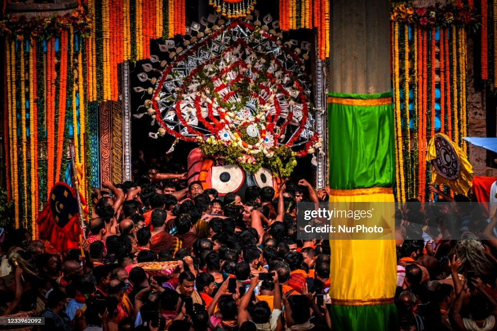
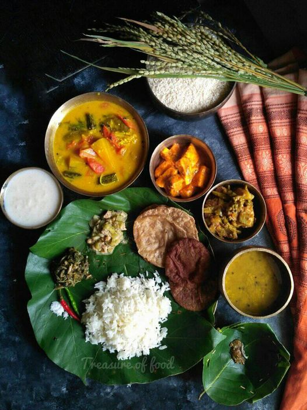
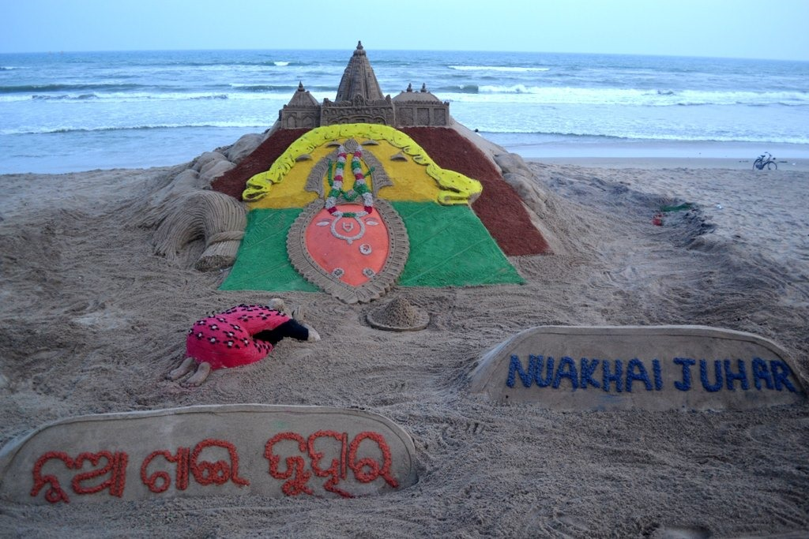
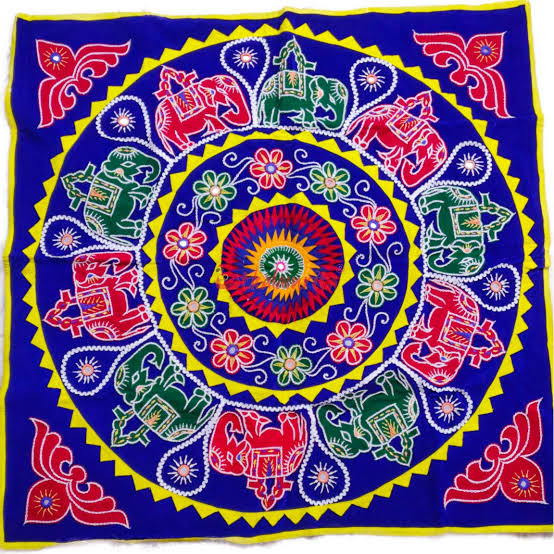
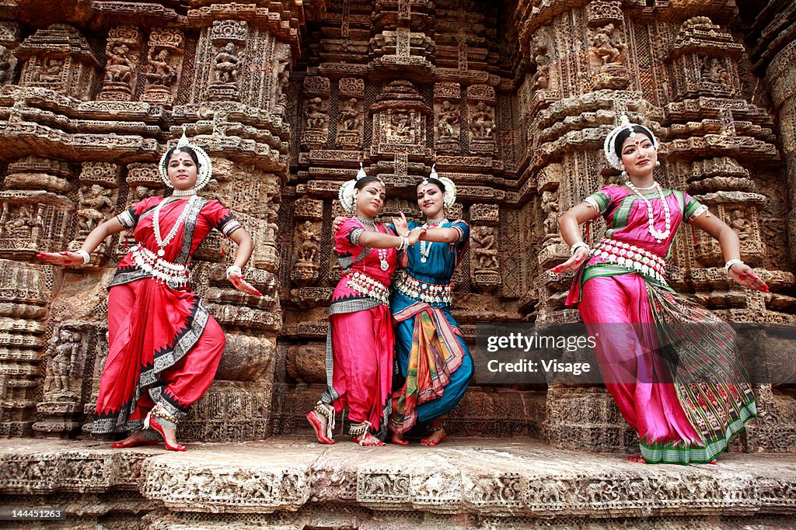
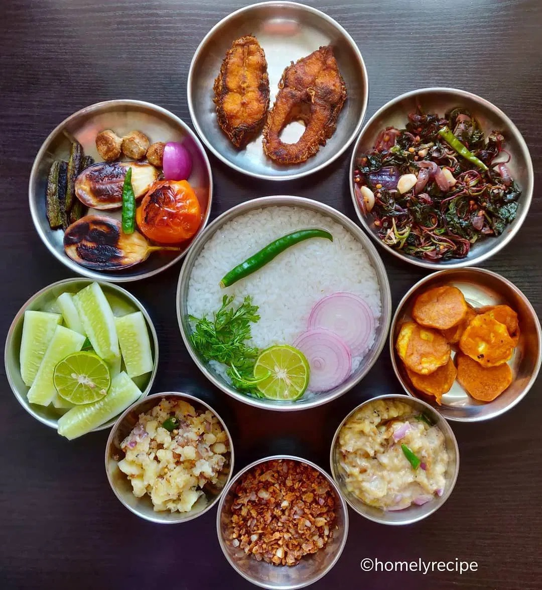
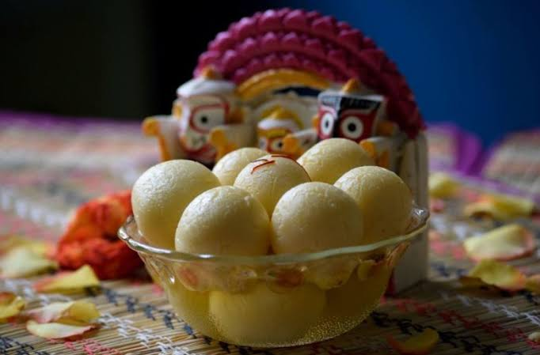
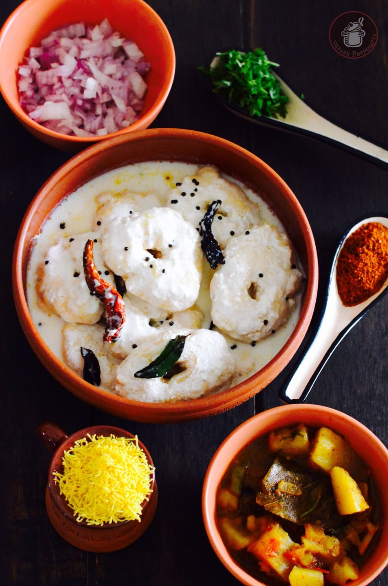

ODISHA
INTRODUCTION
Odisha, located on the eastern coast of India, is a state renowned for its rich cultural heritage, diverse landscapes, and vibrant traditions. Bordered by West Bengal, Jharkhand, Chhattisgarh, and Andhra Pradesh, with a coastline along the Bay of Bengal, its capital Bhubaneswar is known as the “Temple City” due to its numerous ancient temples. Odisha is home to iconic temples like the Jagannath Temple in Puri and the Konark Sun Temple, a UNESCO World Heritage Site. The state is also famous for its classical dance form, Odissi, and natural wonders like Chilika Lake, Asia’s largest brackish water lagoon, and Simlipal National Park, a biosphere reserve and tiger reserve. Festivals such as Rath Yatra and Durga Puja are celebrated with great enthusiasm, showcasing the state’s cultural vibrancy. The cuisine of Odisha includes traditional dishes like Pakhala Bhata, a fermented rice dish, and Chhena Poda, a delicious dessert made from fresh cheese, sugar, and cardamom. Odisha offers a unique blend of history, culture, and natural beauty, making it a fascinating destination to explore.
VISITING PLACES
• SHREE JAGANNATH TEMPLE,PURI
Puri is renowned for the Shri Jagannath Temple and its Golden Beach. It is one of the four sacred Dhams in India, alongside Dwarika, Badrinath, and Rameswar. The temple, built in the 12th century by King Ananta Varman Chodaganga Deva, features impressive Kalinga architecture and stands 65 meters tall. The deities worshipped here are Mahaprabhu Shri Jagannath, his sister Devi Subhadra, and elder brother Mahaprabhu Shri Balabhadra, seated on the Bejeweled Pedestal (Ratna Simhassana). Puri hosts numerous festivals, including Snana Yatra, Netrotsava, and the famous Rath Yatra (Car Festival), which attracts large crowds. Puri Beach, also known as the Golden Beach, is famous for its clean, sandy shores and scenic views. It’s ideal for sunbathing, swimming, and surfing. The beach hosts the annual Puri Beach Festival and has received the ‘Blue Flag’ certification for cleanliness. Local vendors offer delicious seafood and coconut water
• KONARK
The Sun Temple at Konârak, located on India’s eastern shores, is a 13th-century
architectural marvel. It exemplifies Kalingan temple architecture and is designed as a
chariot for the Sun God, Surya, with twelve pairs of wheels and seven horses. The
temple’s intricate carvings depict contemporary life and symbolize the cycle of seasons
and months.
The temple complex includes several distinct structures, such as the vimana (principal
sanctuary), jahamogana (audience hall), and natmandir (dance hall). Built under King
Narasimha Deva I, it reflects the strength and stability of the Ganga Empire and
provides insights into the religious, political, and social life of that era. The temple
is also linked to Brahmanism and tantric practices, embodying the personification of the
Sun God as described in Vedic texts.
The Konark Sun Temple, partially restored by British-era conservation efforts, was
declared a UNESCO World Heritage Site in 1984. It remains a major Hindu pilgrimage site,
especially during the Chandrabhaga Mela in February.
• CHILIKA
Chilika lies about 50 km southwest of the city of Puri from where it is connected by road up to Satpara on the eastern bank. Chilika is the largest brackish water lagoon on India’s east coast, rich in biodiversity. It serves as the largest wintering ground for migratory waterfowl in the Indian subcontinent and hosts over 800 species, including rare and endangered ones like the Barakudia limbless skink. Designated as India’s first Ramsar Site, it includes Nalaban Island, a bird sanctuary. The lagoon supports over 0.15 million fisherfolk and varies in size from 1165 to 900 sq.km between monsoon and summer. A 32 km channel connects it to the Bay of Bengal near Motto village.
• UDAIGIRI AND KHANDAGIRI CAVES
Udayagiri, meaning “Sunrise Hill,” has 18 caves, while The Udayagiri and Khandagiri Caves, near Bhubaneswar, Odisha, are partly natural and partly artificial caves of archaeological, historical, and religious significance. Located on two adjacent hills, these caves date back to the 2nd century BCE and were primarily carved as residential blocks for Jain monks during King Kharavela’s reign. Khandagiri has 15. Notable caves include Ranigumpha, Hathi Gumpha, Ananta Gumpha, Ganesha Gumpha, Jaya Vijaya Gumpha, Mancapuri Gumpha, Bagha Gumpha, and Sarpa Gumpha.
FESTIVAL
• RATH YATRA
The Ratha Yatra in Puri, Odisha, is one of the oldest and largest Hindu chariot festivals. Celebrated annually in June or July, it involves the deities Jagannath, Balabhadra, and Subhadra being taken out of the Jagannath Temple in massive, decorated chariots. The deities are transported to the Gundicha Temple, where they stay for a week before returning to the Jagannath Temple. The festival symbolizes the journey of the deities to their aunt’s home and is attended by millions of devotees. The three chariots in Puri’s annual Ratha Yatra festival are: Nandighosa: Lord Jagannath’s chariot, the largest with 16 wheels, red and yellow clothing, and charioteer Daruka. Taladhwaja: Lord Balabhadra’s chariot with 14 wheels, red and green clothing, and charioteer Matali. Darpadalana: Goddess Subhadra’s chariot with 12 wheels, red and black clothing, and charioteer Arjun. The chariots, resembling Rekha duel-style temples, are distinguished by size, color, and wheels, and are rebuilt annually except for the Kalasa.
• NUA KHAI
Nuakhai Juhar Festival is a festival where the new harvest is worshipped. People come together and offer the first rice of the harvest to their deities before consuming it with their families. This newly harvested rice is referred to as ‘Nabanha.’ Nuakhai is believed to have nine colours. As such, nine sets of rituals are conducted before the main celebration. These nine colours represent different aspects, including cleanliness, invitation, searching for the new harvest, gifting, etc. Nuakhai also represents a new beginning for many. It is time to leave behind your grievances and start anew. Gifts are shared amongst loved ones, and blessings are sought from the elders. The festival ends with people putting on many dances, dramas, and folk songs expressing their tradition and culture. All have fun and merriment.
• RAJA
Raja is a three-day festival in Odisha, India, celebrating womanhood and the earth, marking the start of the agricultural year. Significance: Associated with the Hindu earth goddess Bhumi, believed to menstruate during the first three days. “Raja” comes from the Sanskrit word “rajas,” meaning menstruation. Celebrations: Young women and girls take a break from chores, dress in new clothes, enjoy games and swings, eat rich food and cakes, and sing songs. Days of the Festival: Celebrated over four days in some states: • Pahili Raja (Day 1) • Mithuna Sankranti (Day 2) • Bhudaaha or Basi Raja (Day 3) • Basumati Puja or Basumati Snana (Day 4) Other Traditions: Women wear Alta and jewelry, avoid bathing, walking barefoot, scratching the earth, grinding, tearing, cutting, and cooking. Food: Paan (betel leaves with areca nut) and Podapitha (a cake made from rice flour, jaggery, and coconut) are important parts of the festival
• MAHA BISUVA SANKRANTI
Maha Vishuba Sankranti, or Pana Sankranti, marks the New Year in the Odia calendar and is celebrated with enthusiasm in Odisha, India. It falls on the 24th day of Chaitra, which was April 14th in 2023. Celebrations include temple visits, river baths, special offerings, fairs, and street dances. A sweet drink called pana, made from fruits, milk, water, curd, Bela, and sugar pulp, is central to the festival. An earthen pot filled with pana is hung on the tulsi plant, with water dripping from a hole to signify rain. The festival symbolizes renewal, new beginnings, and community cooperation, and heralds the arrival of summer.
Arts And Craft
• PATTACHITRA
Pattachitra is a traditional cloth-based scroll painting from Odisha, India, known for its intricate details and vibrant colors. Dating back to the 5th century BC, it often depicts mythological stories of Hindu deities like Lord Jagannath. Artists use natural colors and the heritage village of Raghurajpur is famous for this art form.
• CHANDUA
Chandua, or Pipili appliqué work, is a traditional craft from Odisha, India. It involves stitching colorful fabrics onto a base cloth to create intricate patterns. Originating in Pipili village, this art dates back to the 10th century and is used to decorate items like canopies, umbrellas, and wall hangings.
• SILVER FILIFREE
Silver filigree, known as Tarakasi, is a traditional craft from Odisha, India, particularly famous in Cuttack. This intricate art involves twisting and weaving thin silver wires into delicate designs to create jewelry and decorative items. The craft dates back over 500 years and is renowned for its detailed and lightweight creations
Music
• Odissi music, a classical genre from Odisha, India, is known for its intricate melodic patterns and expressive dance forms. It features unique ragas and talas, and traditional instruments like the mardal (drum), bansuri (flute), sitar, and violin. The music often accompanies religious and spiritual themes, particularly in service of Lord Jagannatha. Odisha also has a rich folk music tradition that reflects the everyday lives and culture of its people.
PERFORMING ART
• ODISSI
Odissi is a classical dance form originating from Odisha, India, and is one of the oldest and most expressive dance styles in the country. Known for its fluid movements, intricate footwork, and graceful gestures, Odissi traces its roots back to the ancient temples of Odisha, where it was performed as a form of worship. Dancers wear vibrant saris, elaborate jewelry, and traditional makeup to enhance their expressions. The dance is accompanied by Odissi music, which includes classical ragas and talas.
• DHEMSA
Dhemsa is a vibrant traditional folk dance performed by the tribal communities of southern Odisha. Dhemsa is often performed during annual ceremonies such as Chait Parab and Pus Puni or Pus Parab, usually late at night. The dance is a significant part of the cultural heritage of the Desia or Adivasi tribes, showcasing their rich traditions and communal spirit
• CHHAU
Mayurbhanj Chhau is known for its energetic and acrobatic movements, making it a captivating and dynamic performance. The dance is a significant part of Odisha’s cultural heritage, showcasing the region’s rich traditions and artistic expressions
• SAMBALPURI
Sambalpuri dance is a vibrant and energetic folk dance from the Sambalpur district in western Odisha, India, known for its lively movements, colorful costumes, and rhythmic music. Dancers wear traditional Sambalpuri sarees and dhotis, accompanied by instruments like the dhol, nishan, tasha, and mahuri. The dance involves fast-paced and rhythmic movements, often depicting aspects of rural life and nature, and is performed during festivals and celebrations such as Nuakhai, a harvest festival. This dance form not only entertains but also preserves and promotes the rich cultural traditions of the Sambalpuri community.
FOOD
• PAKHALA
 for several hours. This dish, often enjoyed during the hot summer months, is known for its cooling and refreshing properties. There are several variations of Pakhala, including Dahi Pakhala (with curd), Basi Pakhala (fermented overnight), and Saja PakhalaPakhala is a traditional dish from Odisha, India, made by soaking cooked rice in water (freshly prepared). It is typically seasoned with salt and sometimes flavored with roasted cumin seeds, ginger, or lime juice. Pakhala is often served with accompaniments like fried fish, roasted vegetables, and curd.
• RASAGOLA
Rasogola, a traditional sweet from Odisha, is made from chhena (cottage cheese) balls cooked in sugar syrup. It has cultural significance, especially with the Jagannath Temple in Puri, and is offered during the Niladri Bije ritual. Odisha received the GI tag for “Odisha Rasagola” in 2019, recognizing its unique heritage.
• DAHIBARA
Dahibara, a popular street food from Odisha, is a variant of Dahi Vada. Originating from Cuttack, it consists of deep-fried vadas (lentil doughnuts) soaked in lightly spiced yogurt water. The dish is typically served with aloo dum (spicy potato curry) and ghuguni (pea curry), and garnished with chopped onions, cucumber, and sev (crispy noodles)
• CHENAPODA
Chhena Poda, meaning “burnt cheese” in Odia, is a popular dessert from Odisha, India. This unique sweet is made from well-kneaded fresh chhena (cottage cheese), sugar, and semolina, which is baked until it caramelizes and browns. The dessert is often flavored with cardamom and garnished with cashew nuts and raisins. Chhena Poda is believed to have originated in the village of Dasapalla and is highly favored by Lord Jagannath, the main deity of the Puri Jagannath Temple. It is especially popular during festivals like Durga Puja and Diwali.